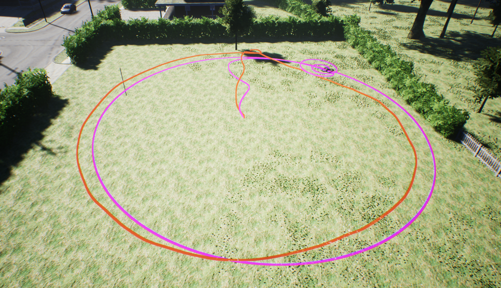

Playback
AirSim supports playing back the high level commands in a *.mavlink log file that were recorded using the MavLinkTest app for the purpose of comparing real and simulated flight. The recording.mavlink is an example of a log file captured using a real drone using the following command line:
MavLinkTest -serial:/dev/ttyACM0,115200 -logdir:.
Then the log file contains the commands performed, which included several "orbit" commands, the resulting GPS map of the flight looks like this:

Side-by-side comparison
Now we can copy the *.mavlink log file recorded by MavLinkTest to the PC running the Unreal simulator with AirSim plugin. When the Simulator is running and the drone is parked in a place in a map that has room to do the same maneuvers we can run this MavLinkTest command line:
MavLinkTest -server:127.0.0.1:14550
This should connect to the simulator. Now you can enter this command:
PlayLog recording.mavlink
The same commands you performed on the real drone will now play again in the simulator. You can then press 't' to see the trace, and it will show you the trace of the real drone and the simulated drone. Every time you press 't' again you can reset the lines so they are sync'd to the current position, this way I was able to capture a side-by-side trace of the "orbit" command performed in this recording, which generates the picture below. The pink line is the simulated flight and the red line is the real flight:

Note: I'm using the ';' key in the simulator to take control of camera position using keyboard to get this shot.
Parameters
It may help to set the simulator up with some of the same flight parameters that your real drone is using, for example,
in my case I was using a lower than normal cruise speed, slow takeoff speed, and it helps to tell the simulator to
wait a long time before disarming (COM_DISARM_LAND) and to turn off the safety switches NAV_RCL_ACT and NAV_DLL_ACT
(don't do that on a real drone).
param MPC_XY_CRUISE 2
param MPC_XY_VEL_MAX 2
param MPC_TKO_SPEED 1
param COM_DISARM_LAND 60
param NAV_RCL_ACT 0
param NAV_DLL_ACT 0